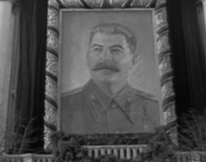

Josef Vissarionovich Stalin, traduzido para a língua portuguesa como José Estaline,
foi um revolucionário
comunista e político soviético de origem georgiana.
A história de Josef Stalin pode ser vista nesse vídeo
Para saber mais sobre esse tirano clique na imagem abaixo.
Volte para a página principal